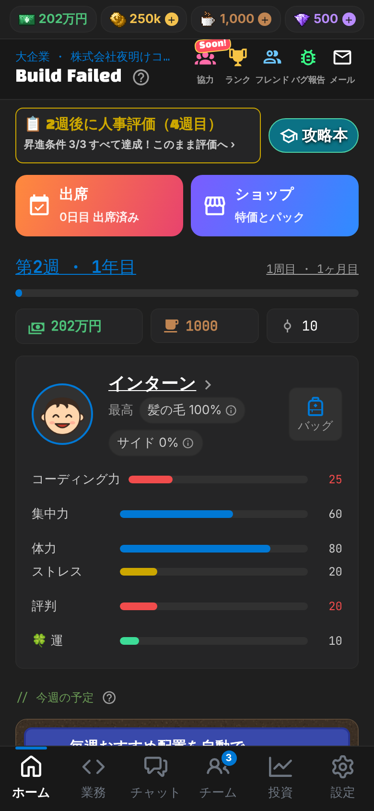

この攻略本について
ゲームを隅々まで調べてまとめた攻略です。数値、確率、条件はすべて実際のゲームに合わせていて、隠しエンディングのようなネタバレは折りたたみの中に入れてあります。上の検索欄で、ヒロインの名前やアイテムの名前ですぐに探せます 🔎
テーマ別にすぐ探す 🔘
🌱 はじめてなら
💰 通貨、毎日のルーティン
📈 キャリア
💌 ヒロイン攻略
🏠 交際の次のストーリー
💹 装備、投資
🤝 同僚、チャレンジ、フレンド
はじめてならこの順番で読んでみてください 🧭
- 🚀 スタートガイドアプリの画面からクラシックステージとキャリアトラック、通貨の集め方まで、基本を押さえます。
- 📈 昇進、キャリアインターンからCTOまで、昇進条件と転職を知っておきましょう。
- 🎒 装備、消耗品コインを何に使うべきか、買わなくていいものは何かを見ます。
- 💌 ヒロイン攻略気に入ったヒロインを選んで、出会いからエンディングまで追いかけます。
- 🏠 同棲、新婚、アルバム、家族恋愛が深まったら、同棲、新婚、アルバム、家族の機能を確認します。
- 💹 投資お金が貯まり始めたら、株、不動産、実物資産で増やします。
- 🏷️ 称号周回を重ねたら、称号を狙って周回を組み立てます。
ゲーム画面のプレビュー 📱



すべてのセクション 📚
🚀スタートガイドタブごとの説明からクラシックステージ、キャリアトラック、コイン、カード、コーヒーの集め方、周回を速く回す方法まで一度に📈昇進、キャリア役職10段階の昇進条件、人事評価スコアの計算、キャリアトラック、会社5社とサーガ、転職まで💌ヒロイン攻略ヒロイン13人をひと目で比較、誰を選ぶか、すべてのヒロイン共通のルールのまとめまで。個別の攻略への入り口です🏷️称号称号11個の開き方と、称号エンディング42個の正確な分かれ道、週、確率、一緒に狙いやすい組み合わせとお互いをふさぐ組み合わせまで🎒装備、消耗品装備37個と消耗品18個の価格、効果、おすすめの買い時、買うべきものと買わなくていいものの等級表まで💹投資株10銘柄、不動産42軒、実物資産9品目のしくみと収益率、おすすめの運用法と破産するパターン、投資エンディングまで🏠同棲、新婚、アルバム、家族同棲から夢の家、新婚、ヒロインの好み、家事、赤ちゃんと育児、子どものエンディング5種、家族アルバム、離婚まで、家族コンテンツの総まとめ